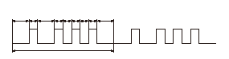

|
概要
リフタ コントロール ユニットは自己診断機能を有し、システムに不具合が発生すると故障コード（DTC）を記憶し、自己診断モードに移行後、警報ブザーの吹鳴にてDTCの出力を行う。自己診断モード中は、回転昇降スイッチを操作してもリフト アップシートは作動しない。
|
|
自己診断モードへの移行
単独操作モード（P）または（L）のときSCS端子が短絡され、かつイグニッション スイッチがON（
II
）されると自己診断モードに移行する。自己診断モード時、SCS端子の短絡が外されるかイグニッション スイッチがOFFされると、単独操作モード（P）または（L）に移行する。
|
|
DTC
DTCは単独操作モード（P）または（L）へ移行時、リフタ コントロール ユニットに1つだけ記憶される。カプラの接続が外されたり、バッテリ端子が外されてリフタ コントロール ユニットへの電源が遮断されると、DTCは消去される。
|
|
DTCの出力
自己診断モード中はDTCの出力を警報ブザーの吹鳴にて行う。DTCは上位コード、下位コードの順に吹鳴し、上位コードの前、下位コードの後および上位コードと下位コードの間は1秒の間隔を設定する。
DTC一覧表
|
例：コード1－3の出力

|
||||||||||||||||||||||||||||||||||||||||||||||||||||||||||||||||||||||||||||||||||||||||||||||||||||||||||||||||||||||||||||||